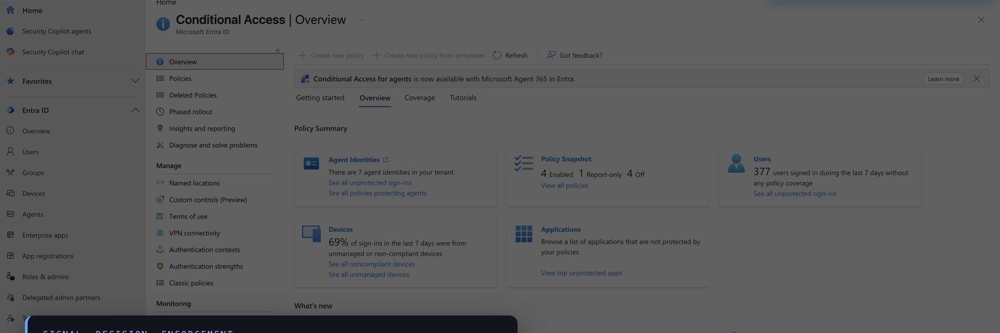
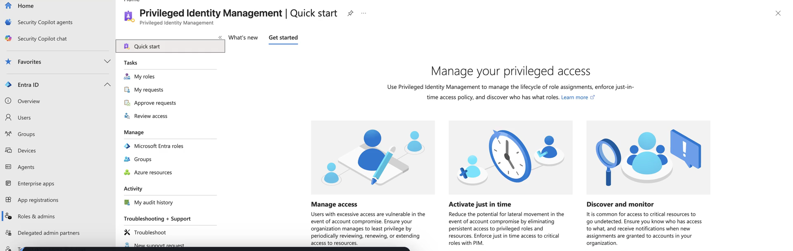

AZ-500 / SC-100 · Foundations
RaMP
The Zero Trust Rapid Modernization Plan
Zero Trust tells you why and what. RaMP is how you start moving on it this quarter — the project-managed, prioritized quick-wins checklist set.
PRIORITIZE → SEQUENCE → SHIP QUICK WINS
What RaMP isNETWORK INTELLIGENCE · FOUNDATIONS
The execution accelerator for Zero Trust
Strategy into action — quick wins first
RaMP enumerates the technical objectives of each area in priority order, documents the steps, and names the people who must be involved — so an organization captures the fastest-impact work first, as a tracked project.
PRIORITIZED CHECKLISTS
CLEAR OWNERS
TARGET TIMELINES
NOT A SEPARATE FRAMEWORK
THE ZERO TRUST EXECUTION LAYER
RaMP vs. the full deployment plansNETWORK INTELLIGENCE · FOUNDATIONS
The distinction the exam rewards
Front-load the work — don't replace it
R
RaMP
Fastest-impact quick wins. Prioritized checklists with owners and target dates. Asks: "what do we do first to reduce the most risk?" Output is a tracked project.
vs
D
Deployment plans
Comprehensive, pillar-complete coverage. Detailed design per technology area. Asks: "how do we apply Zero Trust everywhere?" Output is a full architecture.
RaMP front-loads the deployment plans. It is prioritized, not exhaustive — sequencing by impact is the whole value.
The flagship checklistNETWORK INTELLIGENCE · FOUNDATIONS
"Explicitly validate trust for all access requests"
Validate trust before granting access
Grounded · AZ-500 · Entra Conditional Access
Four areas, built in sequence
Identities → Endpoints → Apps → Network. Identity is the control plane; Conditional Access is where trust is evaluated on every sign-in before access is granted.
IDENTITIESENDPOINTSAPPSNETWORK
portal.azure.com — Microsoft Entra Conditional Access

Where you startNETWORK INTELLIGENCE · FOUNDATIONS
Secure privileged access comes first
The flagship quick win
portal.azure.com — Microsoft Entra Privileged Identity Management

Grounded · AZ-500 · Entra PIM
Eligible, not standing
Both anchor checklists lead with protecting admin accounts. PIM makes privileged access just-in-time, time-bound, and MFA-gated — so a compromised account can't pivot to everything.
When a scenario asks "where do we start," the answer is secure privileged access and validate trust first.
The second anchor workstreamNETWORK INTELLIGENCE · FOUNDATIONS
Ransomware recovery & data protection — time-boxed
Limit the impact of attacks
30
days
secure admin workstations · randomized local passwords
90
days
block privilege escalation · protect identity systems
180
days
mitigate lateral traversal · rapid threat response
A privileged-access strategy again leads. This is the workstream the SC-100 ransomware resiliency objective leans on.
The connective tissueNETWORK INTELLIGENCE · FOUNDATIONS
How RaMP relates to the other frameworks
One picture, six pieces
- Zero Trust is the strategy — why and what.
- MCRA is the picture — the reference architecture.
- MCSB is the checklist — prescriptive controls you measure in Defender for Cloud.
- WAF is the workload lens; CAF is the journey.
- RaMP is the execution accelerator — how you get Zero Trust moving this quarter, not next year.
Don't confuse RaMP with MCSB. MCSB is the prescriptive control benchmark; RaMP is the prioritized project plan.
RememberNETWORK INTELLIGENCE · FOUNDATIONS
RaMP in five rules
The Zero Trust on-ramp
- 1 · RaMP is the project-managed, prioritized quick-wins checklist set — owners and timelines included.
- 2 · It is the execution accelerator for Zero Trust, not a competing framework.
- 3 · Prioritized, not comprehensive — it front-loads the full deployment plans.
- 4 · Flagship checklist is "explicitly validate trust" across Identities, Endpoints, Apps, Network.
- 5 · Secure privileged access comes first — that ordering is the exam's "where do we start" answer.
Hands-on · 1 of 2NETWORK INTELLIGENCE · FOUNDATIONS
Do this
Run the "validate trust" checklist
GOAL · Turn the flagship checklist into a tracked RaMP project plan
- Walk the Identities list against your tenant: secured privileged access, PIM (eligible, not standing), MFA, Conditional Access requiring MFA, sign-in-risk policies, passwordless. Mark each Done / In-progress / Not started.
- Take your first three "Not started" items — those are your quick wins.
- Assign each an owner and a thirty- or ninety-day target using the RaMP accountability model. That owner-and-date table is a RaMP project plan.
✓ DONE WHEN · You have an owner and a date against your top three identity gaps
Hands-on · 2 of 2NETWORK INTELLIGENCE · FOUNDATIONS
Do this
Stand up three ransomware quick wins
GOAL · Make the second workstream concrete and time-boxed
- From the ransomware checklist, pick three time-boxed targets: 100% of admins on secure workstations, 100% of local passwords randomized, privilege-escalation mitigations deployed.
- Map each to the Microsoft control that delivers it — secure admin workstations, Windows LAPS, PIM + Conditional Access.
- Put a thirty / ninety / one-hundred-eighty-day date against each.
✓ DONE WHEN · Each quick win has a control and a target date written down